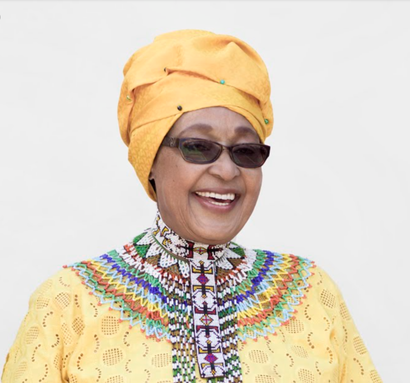

Biography
Nomzamo Nobandla Winnie MadiKizela-Mabdela (1936-2018), was born in the former Transkei, South Africa. Because of her anti-apartheid activism, she was regularly detained by South African government. She endured house arrest, torture and imprisonment in solitary confinement, and was banishe to the town of Brandfort in 1997. Madikizela-Mandela was married to Nelson Mandela for thirty-eight years, twenty-seven of which he was imprisoned. In 1985, she won the Robert F. Kennedy Human Rights Award for her role in South Africa's liberation struggle.